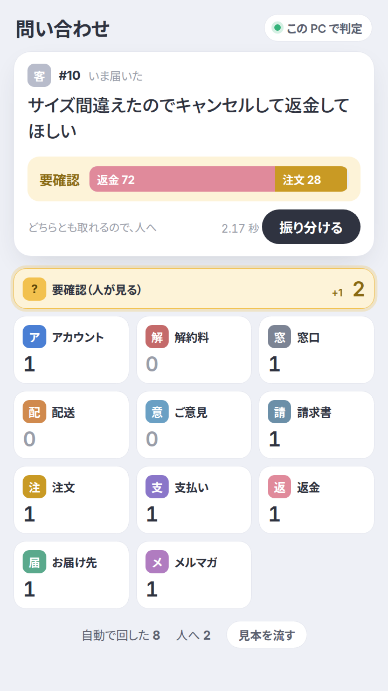

APIキーもGPUもいらない。普通のPCのCPUだけで、日本語の問い合わせを1秒で担当に振り分ける
お客様の問い合わせを、返金・注文・アカウントなど 11 の担当に振り分ける道具を作りました。問い合わせを入れると、担当ごとの確率が出ます。いちばん高い確率が 90% 以上ならそのまま担当へ回し、どちらとも取れるものは「要確認」として人に回します。
判定するのは、Jev と同じ呼び方で使える小さなモデル Jeff です。API キーも GPU も要らず、手元の 4 コアの CPU で 1 件約 0.9 秒でした。問い合わせを外に出せない窓口や、振り分けを毎回人が読んで決めているチームで使えます。
コード · MIT
サーバーと画面と、自分の問い合わせで当たり方を測るスクリプト（Python）。担当は teams.json を書き換えるだけで自分のものに変えられます。テスト 11 件つき。
画面

起動して出る画面。この問い合わせは返金 72%・注文 28% に割れたので、人に回しました
落として動かす手順です（Python 3.10 以上と、約 2 GB の空き）。http://127.0.0.1:8765/ を開き、問い合わせを入れて「振り分ける」を押します。
git clone --depth 1 https://github.com/hitoridev-studio/topic-craft cd topic-craft/works/2026-09-29-inquiry-router python3 -m venv .venv && . .venv/bin/activate pip install --index-url https://download.pytorch.org/whl/cpu torch==2.14.0 torchvision==0.29.0 pip install -r requirements.txt hf download mstrasser/Jeff-Qwen3.5-0.8B --local-dir model/jeff-0.8b --exclude "videos/*" python -m router.server
仕組み
Jeff は、状況と選択肢を渡すと選択肢ごとの確率だけを返す「判定モデル」です。Jev と同じ呼び方（状況・質問・選択肢の説明）で使え、元は Qwen3.5 の 0.8B を英語のデータで学習させたものです。文章を生成しないので、1 回通すだけで済み、CPU でも待てる速さになります。作者は学習のあとに温度を 1 つ合わせ、確率が当たる割合に合うよう較正したと書いています。
確かめたこと
手元の 4 コアの CPU（Intel Xeon 2.1 GHz・GPU なし）で、EC の問い合わせ 330 件（11 の担当 × 30 件）を測りました。
- 正解率は 92.7%（330 件中 306 件）。確率 90% 以上だけ自動にすると、58% を自動で回し、その中の外れは 192 件中 1 件でした。
- 担当の説明を英語で書くと、同じ問い合わせで 81.8% でした。説明の書き方で 10 ポイント以上変わります。
- 問い合わせが日本語でも英語でも、正解率は変わりませんでした（英語の説明で 81.8% と 80.0%）。
- Jeff の作者は英語でしか測っていません。学習する前のモデルは、日本語の依頼 600 件（音声アシスタント・18 択）で 42〜47% でしたが、Jeff は 84〜86% でした。英語で学習した判定の力が、日本語にも効いています。
- Jeff に渡す文が、Jeff の元のコードが組み立てる文と 1 文字も違わないことを、テストで確かめています（
tests/test_decision.py）。
注意
測った問い合わせは、英語の公開データ（Bitext）を言語モデルで日本語に訳したものです。実際のお客様の文は、もっと長く、話がいくつも混ざります。自分の問い合わせで python -m router.evaluate を走らせてから使ってください。
自信を持って外すこともあります。「注文した商品がいつ届くか確認できますか？」を、正解の「配送」ではなく「注文」に 93% で回しました。
推論が要る判断には向きません。日本語の常識問題（JCommonsenseQA）では 76.9% で、Jev の公表値 97.1% に届きません。Jeff は Jev の開発元とは関係のない、独立したプロジェクトです。
出典: Jeff（コードは MIT、重みは Apache 2.0）。問い合わせのデータは Bitext（CDLA-Sharing-1.0）。Jev の日本語の値は IVRy の記事。このページのコードは MIT（GitHub）。作ったのは hitori（X）。